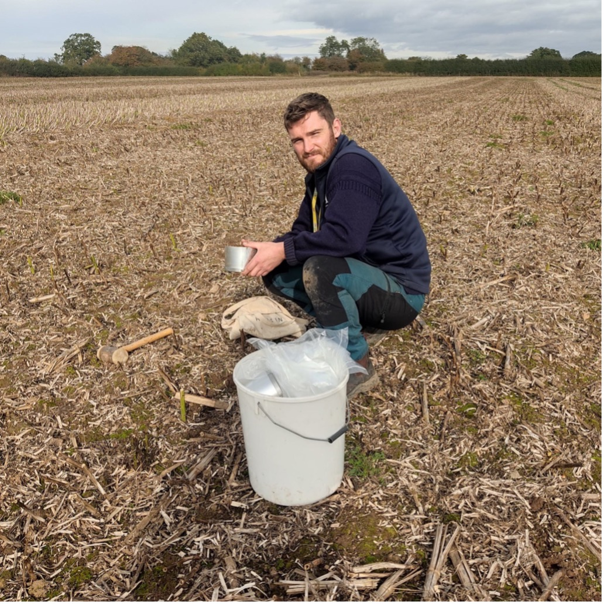

BASE-UK sponsor the Harper Adams University Conservation Agriculture Systems experiment.
01 Inroduction
There is increasing interest in conservation agriculture (CA) within the UK, as evidenced by the fast growth of agricultural shows such as Groundswell and the Real Oxford Farming Conference. It has been suggested that CA cannot compete with conventional practices regarding profitability. However, many scientific studies in this area only use data from a single site collected over one or two years. Evidence suggests that to identify the true effects of such the transition to CA systems, experiments need to run for longer periods and provide economic data to advise farmers properly during the transition period.

Additionally, most studies use a traditional, reductionist scientific approach, where only one variable changes during the experiment. While minimising the variables that change within an experiment may be good scientific practice and an excellent method for answering specific questions about individual mechanisms of a system, it is not well suited to evaluating large, complex systems such as agricultural systems. As such, much of the previous literature is not realistic of the real-world situation where the management requirements of agricultural systems vary considerably. For example, when a farmer transitions to CA, typically, there will be changes to the crop rotation, agronomy, and farm machinery. Therefore, assessing agricultural systems using traditional scientific methodologies can result in one, or potentially both, systems being managed in a sub-optimal way. There is a need for more systems-level agricultural research in the UK, to provide farmers with data that can help them make evidence-based business decisions.
This project aims to build on the PhD research of Joe Collins, who has set up a farmer-led trial to compare the overall performance of CA to conventional arable management using a systems-level field-scale experiment. It’s important to note that industry experts dictate the agronomic decisions, and local farmers and contractors conduct all field operations, highlighting the collaborative nature of this research.
The experiment, which has been running for 3 years and is ongoing, was set up at a 9.5 ha experimental site near Whitchurch, Shropshire (UK) on Whitegates Estate. It comprises a systematic 24 m multi-strip blocked design of CA and conventional crop production, each system is independently managed by agronomists who make all the crop management decisions based on regular field observations. This means that the agronomy, crop management and crop rotations are different between the two systems year on year. Both agronomists are competing to have the most profitable system, and therefore, all decisions are made with this in mind. The conventional system is managed by Alistair Sibbett from BCW Agriculture and the conservation system in managed by Paul Cawood from Soil First Farming. Joe Collins from Harper Adams University manages the trial and collects data on crop yield, soil, greenhouse gas emissions, and system economics.
The current results show that CA in the UK can reduce agronomic expenditure for farmers whilst remaining profitable. The results also highlight the importance of using a systems-level approach to CA experimentation to understand the complex system interactions and to provide useful data to farmers to aid in the transition to CA.
BASE-UK are pleased to announce the sponsorship of the Harper Adams Conservation Agriculture Systems Experiment. Sponsorship of this experiment ensures the continuation of the project, therefore building on the existing dataset, which is useful to farmers in aiding and advising on the transition to conservation agriculture. We look forward to the future results, which Joe will be presenting at the upcoming BASE conference.
Meet the researcher:
Joe is a final-year PhD candidate funded by the Midlands Integrative Biosciences Training Partnership (MIBTP) and a Senior Research Associate at the Earth Rover Program. He has an MSc in Sustainable Crop Production from the University of Warwick and a BSc (Hons) in Agriculture with Crop Management from Harper Adams University. His PhD research is titled “A systems-level evaluation of Conservation Agriculture in the UK” which involves multi-disciplinary research on agronomy, soil science, economics, and greenhouse gas emissions. Joe has over ten years of experience working in the agricultural industry in the UK and abroad.
 {width=50%}